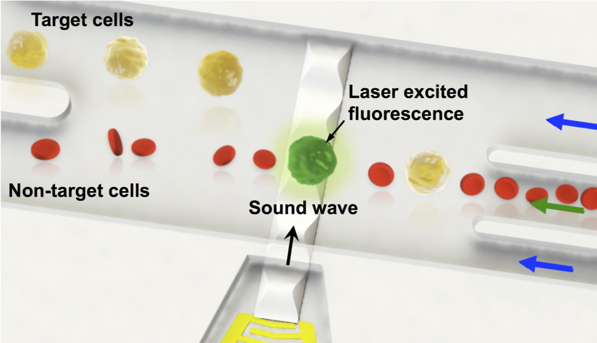

CELLWAVER IN ACTION
In this demonstration, MCF-7 cells are separated from whole blood using CellWaveR.
MCF-7 cells were fluorescently labelled and mixed with whole blood prior to sorting. Detection of the fluorescence signal triggers a sub-ms pulse of the highly focused acoustic wave to gently push the detected cell across the channel.
Sorted MCF-7 cells flow to the top branch of the channel and the remaining whole blood flows to the lower branch.
